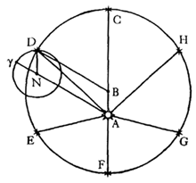

Chapter 39
"In adopting this account, we would indeed approach more closely the geometrical suppositions of the ancients, but we would stray very far from the physical theory."
Before approaching Kepler, a little background from his future is in order:
Moving in a Line
When you want to draw a straight line, what do you do? We use rulers, straight-edges, sides of notebooks, etc. to make sure our lines are straight. That is, we use an object that we already presume to be straight with which to make another straight object. (No question is usually made of whether the factory producing rulers is actually making straight ones. With which ruler will they measure their products?) It is much different when it comes to the question of drawing a circle. Although you might use a glass or a roll of tape to draw a circle, a pre-existing circle shape is not necessary: how circular do a compass, or a pen tied to a piece of string, look? We are able to create circular motion without starting from an already-existing circular shape.
Now, does there exist a "compass" for drawing straight lines? Far from being a useless question, the creation of mechanisms to move in straight lines was essential for unleashing the potential of heat-powered machines launched by Leibniz.
A steam engine (or a car engine, for that matter), transforms the linear expansion of steam in a cylinder into rotational motion through the use of a crankshaft. As the piston is pushed back into the cylinder, that same continuing rotational motion is translated into the linear motion of the piston. But what if the mechanism for moving the piston is not perfectly linear? Then the wear of the piston on the side of the cylinder can ruin your machine. The solution? Developing a straight line "compass"!
(Note: These animations show straight rods, but the functioning is just the same if they be bent, just so long as they are rigid, to maintain the same relation between their end points.
The first to offer a reasonably good solution was James Watt, who proposed his "Watt's Parallel Motion" in 1784. His linkage of rods and joints was linear to within 0.0008" per inch of motion.
Chebyshev, from Saint Petersburg, did better -- he got the error down to the thirteenth order of magnitude:
Peaucellier's Linkage
But, the first to create a truly linear motion was the Frenchman Charles Nicolas Peaucellier, who developed a mechanism in 1864. The motion is based on a certain characteristic of the geometry of circular inversion. The two points in this animation on the blue rhombus, unconnected to the red lines from the center, are inverse points with respect to the purple inverting circle. (For those who are doing their complex functions homework, what is the complex function that makes this circular inversion transformation? Does such a complex function exist?) The moving point at the end of the green line traces out the dashed green circle. Now, it is a property of circular inversion that a circle touching the center of the inverting circle is turned into a line. Thus, the point on the right of the blue rhombus traces out the dashed line while the point on the left of the blue rhombus traces out the dashed circle.
Watt, Chebyshev, Peaucellier, and others. Over a century of work. That's a lot of time and effort to be able to physically achieve an outcome that is so very simple geometrically!
The Difficulty of Creating Geometric Results Physically
Working through the challenge of constructing a straight line will give you an insight into what confronted Kepler. After his development of the non-inductive, non-geometric, physical principle of gravitation, first opening for humanity the process of hypothesizing actually physical principles, Kepler returns to geometry to investigate the form of the planet's motion resulting from this physical principle -- and he really winds up in trouble! The geometric simplicity of circular motion is incredibly difficult to make when starting from physical causes!
Recall Copernicus's reasoning for circular motion from his De Revolutionibus:
“We must however confess that these movements are circular or are composed of many circular movements, in that they maintain these irregularities in accordance with a constant law and with fixed periodic returns: and that could not take place, if they were not circular. For it is only the circle which can bring back what is past and over with [or any closed curve! − ed.]; and in this way, for example, the sun by a movement composed of circular movements brings back to us the inequality of days and nights and the four seasons of the year. Many movements are recognized in that movement, since it is impossible that a simple heavenly body should be moved irregularly by a single sphere. For that would have to take place either on account of the inconstancy of the motor virtue -- whether by reason of an extrinsic cause or its intrinsic nature -- or on account of the inequality between it and the moved body. But since the mind shudders at either of these suppositions, and since it is quite unfitting to suppose that such a state of affairs exists among things which are established in the best system, it is agreed that their regular movements appear to us as irregular, whether on account of their circles having different poles or even because the earth is not at the center of the circles in which they revolve.” (De Revolutionibus, I.4)
Now, with Kepler's demonstration of the failure of his vicarious hypothesis, we are led to the necessary conclusion that uniform circular motion exists nowhere. And now, in chapter 39, we come across the difficulty of creating even non-uniform circular motion. To get deeper into the epistemology behind this, let's work through what Kepler says. He opens the chapter:
“And so, in what has been demonstrated, let us take these axioms, which are of great certainty.
- First, that the body of a planet is inclined by nature to rest in every place where it is put by itself.
- Second, that it is transported from one longitudinal position to another by that power which originates in the sun.
- Third, if the distance of the planet from the sun were not altered, a circular path would result from this motion.
- Fourth, supposing the same planet to be in turn at two distances from the sun, remaining there for one whole circuit, the periodic times will be in the duplicate ratio of the distances or magnitudes of the circle.
- Fifth, the bare and solitary power residing in the body of a planet itself is not sufficient for transporting its body from place to place, since it lacks feet, wings, and feathers by which it might press upon the aethereal air.
- And, nevertheless, sixth, the approach and recession of a planet to and from the sun arises from that power which is proper to the planet.
All these axioms are agreeable to nature in themselves, and have been demonstrated previously.
Now let us work with geometrical figures in order to see what laws will be required to represent any desired planetary orbit. Let the orbit of the planet be a circle, as has been believed until now.” (p.407)
Here is an animation of circular motion, where the time the planet takes to traverse a distance of arc is proportional to its distance from the sun: its speed is inversely proportional to its distance from the sun. It maintains a constant distance from the marked point:
Gravitation accounts for the changing speed, but what mechanism "proper to the planet" can account for its changing distance from the sun, in such a way that it moves in a circle around a location at which nothing is present?
First proposal
Kepler's first proposal is that the planet is on an epicycle, which rotates with the proper speed. Here, point γ is where the epicycle would be pointing, but the epicycle rotates around N to keep the planet always on the top of the epicycle:
Now, something very peculiar must happen for this to be the case. Besides the fact that this requires the planet to, under its own power, move around an epicycle (a violation of the fifth axiom), another very great absurdity arises: "And since intensification and remission depend upon greater or less distance of the body of the planet from the sun, therefore the center of the epicycle [N], remaining at the same distance, is made to move more slowly or more swiftly on account of the planet's being farther from or nearer to the sun." This violates the principle of gravitation! Isn't speed supposed to depend on distance? Then why does the center of the epicycle slow down and speed up? How could it be that, "that same center N, would be now swifter, now slower, again contrary to what was said above, that the power always produces the same speed at the same distance"?
Other ideas
Next, Kepler proposes that the epicycle always remains parallel to itself, always pointing in the same direction. This is the same as the planet simply moving around the circle centered on B. But this requires the planet to imagine the center point B, "where there is no particular body in that center for the planet to be aware of." The planet might as well move on its own, at the proper distance from the sun, "as if it were obtaining the values right from the Prutenic or Alphonsine tables."
Perhaps the planet does not move on the circumference of an epicycle, but merely reciprocates on its diameter:
"The question now is, what is the measure by which the planet metes out the correct distance for any given time?"
The planet cannot determine its reciprocation by measuring out an equal distance from B, because there is nothing at point B. It cannot gauge its descent and ascent by the distance it has moved along its orbit, either: descents γι, ιλ, and λζ, which are all three different, correspond to the same distance traversed along the eccentric. Neither will elapsed time or angle around the sun work: "For the time or sojourn of the planet on equal parts of the eccentric CD, DE, EF, is continuously diminished from the highest to the lowest points, and the angles at the sun are continuously increased, but the reciprocations γι are increased in the middle regions, such as ιλ"
Approaching the form of the orbits with Kepler's physical principle in hand, a true paradox presents itself. The old, geometrical idea of "shape" no longer functions in a dynamic, physical context. Making a circle is even harder than making a straight line!
"You see, my thoughtful and intelligent reader, that the opinion of a perfect eccentric circle for the path of a planet drags many incredible things into physical theories."
| Next |